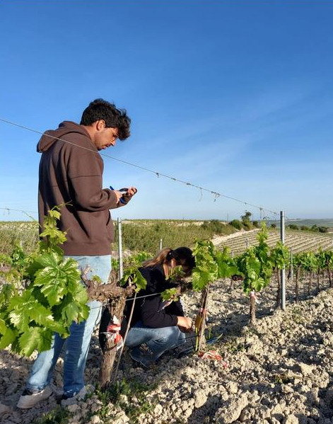
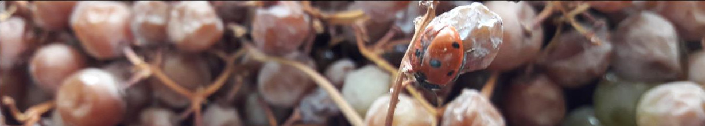
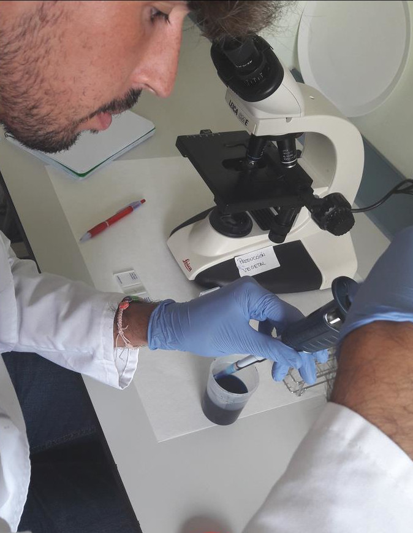

LA CERTIFICACIÓN EN PRODUCCIÓN ECOLÓGICA
La certificación de un producto consiste en la
verificación de los requisitos de una norma por una
tercera parte independiente y acreditada.
La producción ecológica cuenta con una normativa común para toda Europa (Reglamento (UE)
2018/848). Esta norma pública define, entre otras cosas, qué prácticas agronómicas son
recomendables o están prohibidas y cuáles son los productos fitosanitarios y fertilizantes que
podemos utilizar en nuestra viña, si fuera necesario.
Para conseguir el certificado válido para la
comercialización de uva ecológica, nuestro producto
ha debido pasar antes por el proceso de
certificación.
La certificación de un producto consiste en la
verificación de los requisitos de una norma por una
tercera parte independiente y acreditada.
En Andalucía, el control y certificación de la producción ecológica recae en los organismos de
control privados. Igualmente, el organismo de control debe estar autorizado por la autoridad
competente, cumplir la norma en vigor y estar acreditados por ENAC.
ETAPAS DEL PROCESO DE CERTIFICACIÓN
El proceso de certificación es el conjunto de etapas a seguir para que dicho producto pueda ser
comercializado como ecológico.
Etapas del proceso de certificación:
- Solicitud de inicio de actividad.
- Revisión de la solicitud.
- Realización de auditoría.
- Emisión de informe de auditoría.
- Evaluación de informe de auditoría y emisión del certificado, si
procede.
- Programa de seguimiento.
Solicitud de inicio de la actividad que
el operador presenta al organismo de
control.
La persona (física o jurídica) interesada en
certificar su uva como ecológica, deberá
notificar al organismo de control en quien
haya delegado la responsabilidad de los
controles oficiales, su deseo de iniciar la
actividad. A partir de este momento, la
persona interesada pasa a conocerse como
“operador/a”.
El organismo de control contará con un
formulario para realizar la solicitud de inicio
donde el operador deberá cumplimentar
sus datos de contacto, datos identificativos
de las parcelas, planos, descripción de la
explotación, su entorno y el sistema de
autocontrol.

Revisión de la solicitud por parte del organismo de control.
Personal cualificado del organismo de control revisará la solicitud y documentación adjunta que
haya presentado el interesado. Igualmente, personal técnico cualificado comprobará que la finca
cumple con los requisitos que la normativa europea sobre producción ecológica requiere.
El resultado de esta revisión podrá ser “conforme”, “pendiente” (cuando está incompleta) o “no
conforme” (cuando la solicitud no es acorde con los criterios de la producción ecológica en la Unión
Europea el interesado no ha facilitado la información necesaria para poder valorar la idoneidad de
la solicitud.
Realización de Auditoría por parte del organismo de control.
El organismo de control designará a un auditor la visita a la finca y sus instalaciones. En esta visita el
auditor realizará una auditoría documental y física, tanto del sistema de autocontrol del operador,
así como del proceso productivo.
El operador deberá tener a disposición del auditor los registros documentales tales como: facturas,
albaranes, contratos de los servicios subcontratados, cuaderno de explotación.
El auditor deberá poder acceder a cualquier zona, en el ámbito de la finca e instalaciones que
considere, pudiendo tomar cualquier tipo de evidencias que estime necesaria. Además, el auditor
podría tomar muestras (suelo, material vegetal, fruto…) para la comprobación de que se controlan
los riesgos detectados o para evidenciar prácticas no conformes con la reglamentación.
Finamente, el auditor comunica al operador el resultado de la auditoría a través del informe de
auditoría.
Emisión del informe de auditoría por parte del auditor del organismo de control.
En el caso de haber detectado incumplimientos se reflejarán en el informe de auditoría. En ese
caso, el operador deberá presentar como respuesta el alcance de la desviación, el destino de la
producción afectada, el análisis de causa, las acciones correctivas y el plazo de implantación.

Evaluación del informe de auditoría y emisión del certificado de conformidad, en su caso,
por parte de la Comisión de Certificación del organismo de control.
La Comisión de Certificación del organismo de control es el órgano con potestad para conceder,
aplazar o denegar el certificado del producto.
Cuando se dan las condiciones legales adecuadas para la concesión de la certificación, se emite al
operador, junto con la decisión de certificación, un documento denominado “Certificado de
conformidad”.
El certificado de conformidad es el documento válido para poder realizar cualquier transacción
comercial de productos ecológicos, sólo puede ser usado por su titular y para los productos y
categorías que en él se reflejen.
Programa de seguimiento del organismo de control.
Una vez emitida la certificación, esta se irá renovando tras la realización de posteriores auditorías,
al menos una vez al año, y otras en base al riesgo que posea el operador en la finca.
Este proceso se repetirá mientras el operador renueve anualmente los compromisos adquiridos
con el organismo de control y cumpla con la normativa vigente.
PERÍODO DE CONVERSIÓN
Para las explotaciones que inician su actividad
en producción ecológica, la normativa
establece que deben pasar por un período de
conversión antes de hacer uso del término
“ecológico” en la comercialización de sus
productos.
Durante este periodo de tiempo, los productos
procedentes de esas fincas no podrán hacer
uso de la indicación “agricultura ecológica”,
pero deben cumplir con todos los requisitos
que establece la normativa en vigor.
Este periodo de tiempo no es siempre el
mismo. La norma establece que para la viña,
serán productos ecológicos aquellos
recolectados tres años después del inicio del
período de conversión.
